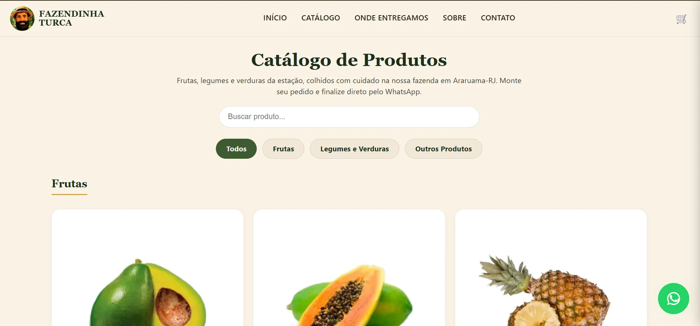

CASE DE SUCESSO · LOJA DE PRODUTOS NATURAIS
A YANSIX criou uma loja online em formato de mercadinho, estruturando catálogo, pedidos e comunicação para facilitar as compras de produtos naturais e as entregas na região.
O CLIENTE

A Fazendinha Turca atua com produtos naturais e precisava de uma estrutura simples para vender online e atender a demanda da região. A solução foi transformar o catálogo em um mercadinho digital, permitindo que o cliente encontre os produtos, monte o pedido e avance para a entrega local.
O DESAFIO
O desafio era transformar a venda local em uma jornada digital objetiva: apresentar o catálogo completo, facilitar a escolha dos produtos, receber o pedido e organizar a entrega na região. O site passou a funcionar como um mercadinho online, reduzindo a dependência de conversas soltas para iniciar cada compra.
DIAGNÓSTICO YANSIX
O diagnóstico mostrou que o principal ganho viria de colocar o produto no centro da experiência: catálogo completo, categorias claras, fluxo de pedido e comunicação com o cliente. A estrutura digital também precisava apoiar a rotina operacional, e não apenas funcionar como uma vitrine.
SOLUÇÃO APLICADA
Criação de uma experiência de compra digital para apresentar os produtos naturais, receber pedidos e apoiar as entregas na região.
Produtos organizados em categorias, com busca e navegação pensadas para o cliente encontrar o que precisa com rapidez.
Formulários e automações para organizar contatos, pedidos e informações do cliente, conectando a presença digital ao processo comercial.
ESTRATÉGIA UTILIZADA
Mapeamento dos produtos, público, região de entrega e rotina de pedidos.
Definição da estrutura de categorias, catálogo, pedido e comunicação com o cliente.
Implementação da loja, catálogo de produtos, navegação e fluxo de pedido para a região.
Formulários e automações para reduzir trabalho manual e organizar os contatos comerciais.
Estrutura digital pensada para ser usada no dia a dia da loja e facilitar novas compras locais.
DEPOIMENTO
A Fazendinha Turca passou a ter uma estrutura digital própria para apresentar os produtos, receber pedidos e organizar a venda local em formato de mercadinho online.
EXPLORE TAMBÉM